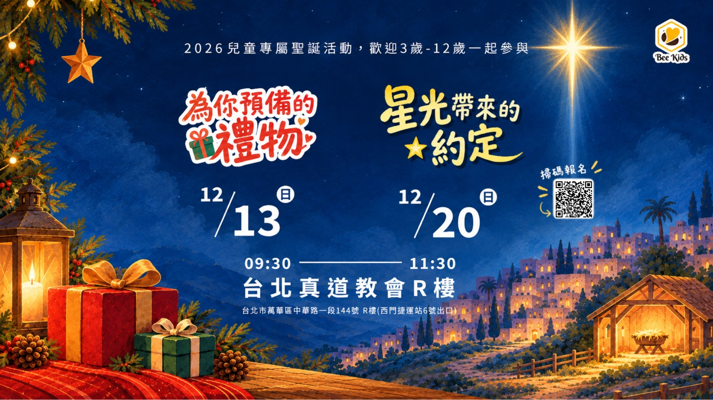

精彩活動

2026 聖誕節 Bee Day
一起享受歡樂、溫暖的聖誕節，並認識耶穌是神賜給每個孩子最珍貴的禮物。
活動資訊
- 日期
- 12/13、12/20
- 時間
- 09:30-11:30（09:00開放遊戲）
- 地點
- 真道教會R樓
- 對象
- 3-12歲
2027 寒假兒童營會《Emoji 電力公司》情緒管理營
各位小怪獸們，歡迎來到 Emoji 電力公司！我們發電的原料，就是你心中的波濤駭浪。
有開心😄、有生氣😡、有興奮🤩、有難過😭。把它們通通投進發電機，把發出的電力💡發送給世界吧！但要先認識它們，才能好好發電，不然隨便衝出來，可是會電⚡到別人喔！
課程介紹
每個孩子心中都有一隻百變怪，會隨著情緒變大變小。牠每天的工作，就是把心中的情緒燃料分類、辨識與處理，再放進發電機。這次的訓練營，要好好訓練你的百變怪，成為合格的電力公司成員，為世界持續發電！
活動資訊
- 上班日期
- 2027/2/1（一）～2/3（三），當天接送不過夜
- 打卡時間
- 08:30–17:30
- 上班地點
- 真道教會 R 樓（台北市萬華區中華路一段 114 號 R 樓）
- 招募資格
- 國小三年級至六年級，額滿為止
任務費用
第一階段
1,500 元即日起至 12/31
1,500 元即日起至 12/31
第二階段
2,000 元至 01/24 報名截止
2,000 元至 01/24 報名截止
本活動繳交完費用才算報名完成，並保留名額。參與〈我的情緒百變怪〉還可獲得 100 元折價！